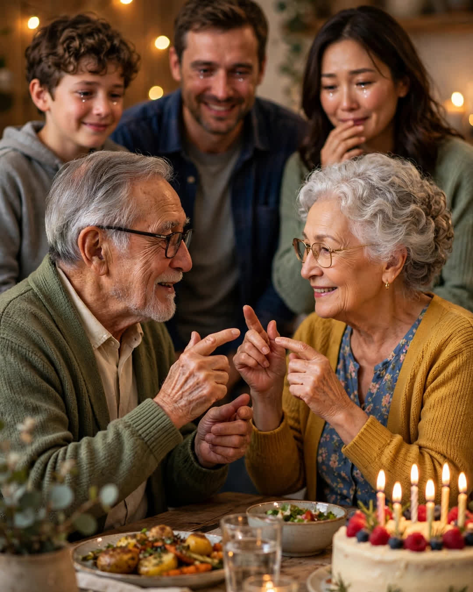

Sign Language
A Clipp Kaili original story

On my mother's sixty-second birthday, my father stood up in the middle of her party, raised his hands, and told her he loved her without making a sound.
Mom began losing her hearing two years ago. Slowly at first — the TV creeping louder, the phone calls she started handing to Dad with a little laugh: "You take it, your ears are younger." Then faster. The doctor used the word "progressive," which is a clean word for a door that closes a little more every month and does not open again.
She covered it the way proud women do. She learned to watch mouths. She laughed when everyone laughed, half a beat late, and hoped it was the right moment. At family dinners she grew quieter, and her quietness fooled almost everyone.
Not Dad. Never Dad.
What none of us knew — what he hid like a boy hiding a birthday present — was that for one whole year, every Tuesday and Thursday night, while Mom was at her sister's playing cards, my father sat in the community center across town with a class of teenagers, new parents, and one very patient teacher named Mrs. Okafor, learning sign language.
He practiced in the garage. He practiced at red lights. He kept a notebook by his recliner, under the newspaper, with the signs drawn out in his engineer's hand, arrows and angles, like his hands were machines he was determined to rebuild. He told the family his evenings were "a project at the lodge." My father has never once, in forty years, described anything true as "a project at the lodge" — but we were all too busy to notice, and he was counting on exactly that.
The birthday dinner was at our house. Twenty people. Candles. The grandkids had made a banner. Mom sat at the head of the table doing her brave, half-beat-late smiling, and after the cake, Dad stood up and tapped his glass, and the room went quiet.
Then he used his hands.
Slowly at first, then surer: "Happy birthday. I know the world is getting quieter for you. So I learned a new language. You will never sit at a table and be alone in the quiet. Wherever you go, I go. In any language. Happy birthday, my love. Sixty-two years, and I would learn anything for you."
Mom stared at him. And then — here is the part that undid the whole room — she raised her hands and signed back, slow and clumsy and perfect:
"I know. I saw the notebook in March. I have been learning too. I did not want you to be the only one talking."
She had taken the Saturday class, across town, in secret — for him. So that when the quiet came for good, he wouldn't be signing into the dark alone.
Two people, in their sixties, each secretly spending a year learning a whole new language, each one certain they were rescuing the other.
My sister cried into the birthday cake. The grandkids now demand to be taught one sign a week, and Sunday dinners at our house are half in hands now — loud, clumsy, joyful hands.
Love does not always shout to be heard over a closing door.
Sometimes it just quietly learns to speak on the other side of it — and finds, to its joy, that the other person has been learning too.
This story is a work of fiction, written to touch hearts and bring families closer.
← Back to all stories